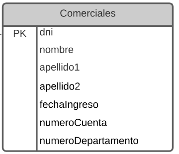
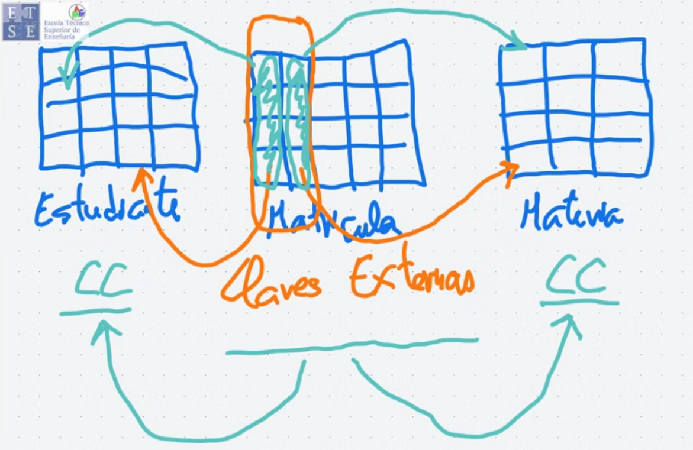
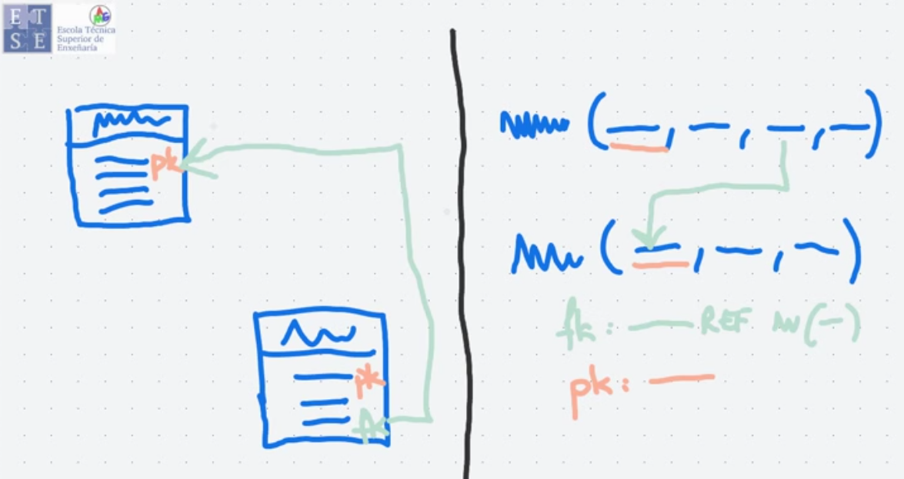
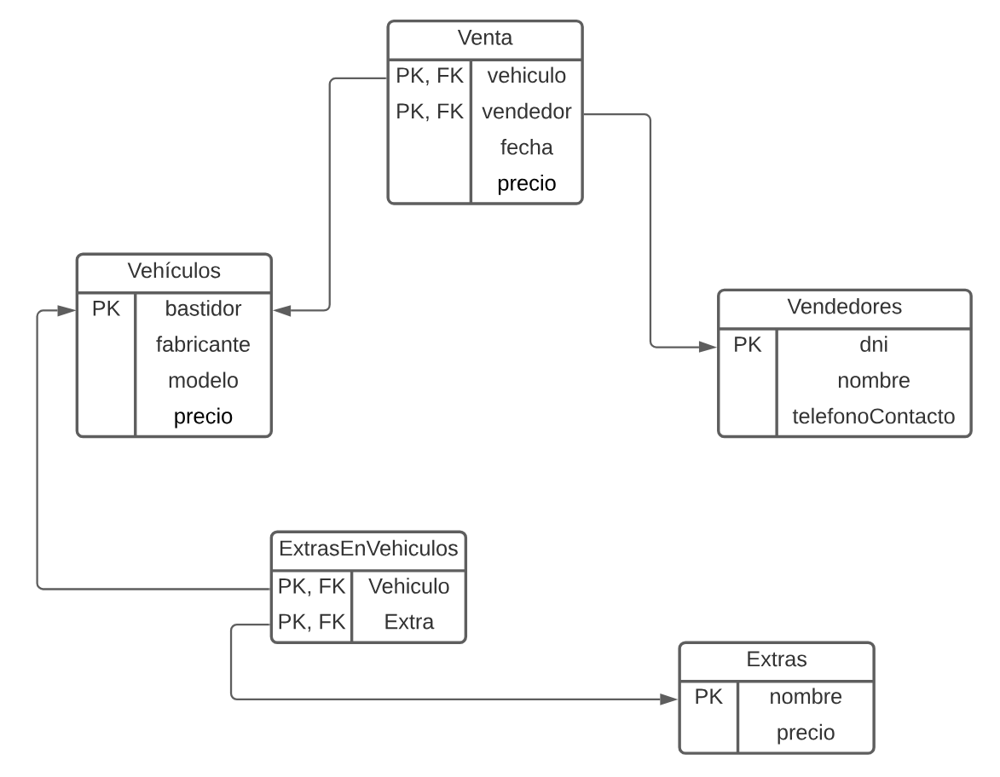

BASES DE DATOS · curso 2
2. MODELO RELACIONAL · BASES DE DATOS
Escrito por Adrián Quiroga Linares.
2.1 Introducción
El Modelo Relacional es un enfoque para organizar datos utilizando tablas. Cada tabla es como una hoja de cálculo con filas y columnas, donde las columnas representan los atributos y las filas son tuplas (conjuntos de valores que describen una entidad). Por ejemplo, una tabla llamada profesor puede tener columnas como ID, nombre, departamento, y sueldo, donde cada fila representa un profesor.
En el contexto del modelo relacional, una relación es el nombre técnico para una tabla. Cada relación se puede ver como el resultado de combinar, mediante un producto cartesiano, todos los posibles valores de los atributos. Este concepto significa que, aunque en la práctica solo vemos filas específicas, una tabla podría, en teoría, contener todas las combinaciones posibles de los valores de sus atributos.
2.2 Estructura de las BD Relacionales
Una base de datos relacional consiste en un conjuntos de tablas, a cada una de las cuales se le asigna un nombre único.

Una Relación es una tabla con filas y columnas resultado del producto cartesiano de conjuntos de elementos de interés.
Por norma general, una fila representa una asociación entre un conjunto de valores. Una relación entre n valores se representa como una n-tupla de valores, es decir como una tupla de n valores, que se corresponde con una fila de una tabla.
En el MR, el término relación se utiliza para referirse a una tabla, mientras el término tupla se utiliza para referirse a una fila. El término atributo se refiere a una columna de la tabla. El Grado de una Relación es el número de atributos que forman la relación.
La Cardinalidad es el número de tuplas que contiene la relación
Cada atributo tiene un conjunto de valores permitido, llamado dominio del atributo. Es necesario que todo dominio sea atómico. Es atómico si no es compuesto o multivalorado. El MER los permite.
2.3 Esquema de la BD Relacional
La definición de todas las tablas que forman una BD se denomina esquema de la BD (el diseño lógico de la BD). El esquema es la definición general, los datos particulares almacenados en un momento se denominan ejemplar de la BD. En lenguaje de programación el esquema se corresponde con el concepto de definición de tipos y el concepto de relación con el de variable. En general, los esquemas de las relaciones consisten en una lista de los atributos y de sus dominios correspondientes.
2.4 Claves
Cada tupla dentro de una tabla debe ser distinguible de todas las restantes tuplas de esa tabla, por tanto toda tabla deberá tener un conjunto de atributos que esté garantizado que tienen valores diferentes en cada una de las filas de la tabla. Esta unicidad debe cumplirse para las filas que estuvieron almacenadas en la tabla en el pasado, para las filas que están almacenadas en el presente y para cualquier fila que se pueda almacenar en el futuro.
Superclave: es un conjunto de uno o varios atributos que, considerados conjuntamente, permiten identificar de manera unívoca una tupla de la relación.
Claves Candidatas: son aquellas superclaves mínimas (no se puede eliminar ningún atributo sin perder la condición de superclave).
Clave primaria: es una de las claves candidatas, normalmente se escoge la más estable en el tiempo.
El modelo relacional incorpora redundancia controlada para visualizar las relaciones conceptuales entre diferentes tablas. Esta redundancia controlada se plasma incorporando a una tabla atributos denominados clave externa que hacen referencia a claves candidatas de otras tablas.
Los valores de clave externa están restringidos a valores que existan previamente en la clave candidata referenciada, generando lo que se conoce como restriccion de integridad referencial.

2.5 Diagramas de esquema
No hay definido un modelo concreto de representación, cualquier forma es válida siempre que deje muy claro cuáles son las claves externas y a qué claves candidatas hacen referencia.
La gran diferencia entre el MER y el MR es la existencia o no de redundancia de atributos. En el Modelo Relacional se representa explícitamente una cierta redundancia controlada mediante las claves externas y la integridad referencial. En el Modelo Entidad-Relación, simplemente no puede haber redundancia.


Definiciones
Relación: tabla con filas y columnas resultado del producto cartesiano de conjuntos de elementos de interés.
Atributo: Cada columna, con nombre diferente de una relación.
Dominio: Conjunto de valores permitidos para un atributo.
Tupla: Cada fila de una relación.
Cardinalidad: Número de tuplas que continue la relación (tabla).
Base de Datos Relacional: Colección de relaciones, cada una con un nombre distintivo.
Esquema de Relación: Estructura de una relación definida por un conjunto de parejas de atributos y sus correspondientes dominios.
Esquema de la Base de Datos Relación: Conjunto de esquemas de relaciones, cada uno con un nombre distintivo.
Superclave: Atributo o conjunto de atributos que identifica(n) de forma unívoca cada tupla dentro de una relación.
Clave Candidata: Superclave tal que ningún subconjunto propio de la misma es superclave de la relación (superclave mínima).
Clave Primaria: Clave candidata seleccionada por el diseñador de la Base.
Clave Externa: Atributo o conjunto de atributos dentro de una relación que se corresponde(n) con una clave candidata de alguna relación (incluso la misma) de la Base de Datos.
Valor Null: Valor desconocido de un atributo en una tupla de una relación.
Integridad de Entidad: En una relación, ningún atributo de una clave candidata puede tomar valor null.
Integridad Referencial: Si hay una clave externa en una relación, el valor de dicha clave externa debe corresponder al valor de la clave candidata relacionada en la relación de origen o tomar valor null.